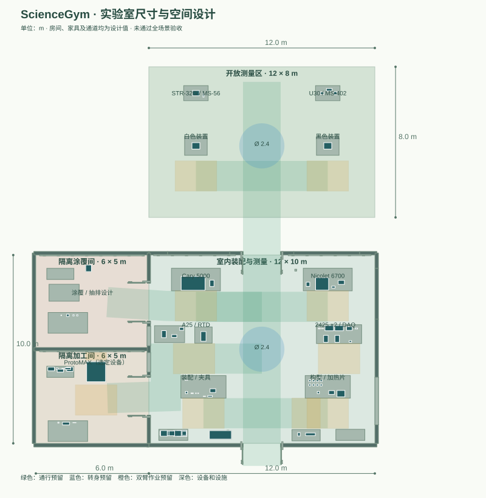

设计稿，等待验收。房间与家具为新设计，设备保持原始物理比例。空间预留尚未通过精确灵巧手和动态运动验证；缺失资产列在下方清单。
—已放置模型实例
4实验空间分区
加载中几何布局检查
待验收资产与全场景
从资产到完整操作
读取本次执行约束…
查看 11 个分支与未解决的旧接口
| 分支 | 操作定义 | 执行状态 |
|---|
LAYOUT EVIDENCE
打开完整平面图 ↗通道和工作空间

主实验区 12 × 10 m；加工间和涂覆间各 6 × 5 m；室外测量区 12 × 8 m。以上均为本次设计尺寸。
| 路径 | 预留宽度 | 检查 |
|---|
检查使用墙体、家具占用范围和已有本体姿态的几何包络。完整的身体／灵巧手姿态、动态平衡和安全距离仍待验证。
COMPLETE INVENTORY
全部需求与当前资产
清单行是需求条目，部分仍需拆分成具体零件和数量。“已放置”仅说明场景中有模型。
| 需求 | 类别 | 场景状态 | 验收 |
|---|
安全设计与待解决事项
风险记录说明设计依据和缺口。尚无全场景安全合格或现实场地合规结论。
验收意见
检查完场景后，可把问题写在这里并下载。记录保存在当前浏览器；页面不会自动作出验收决定。